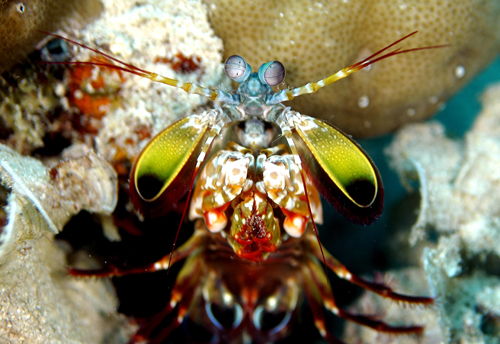

Fatos sobre o Stomatopoda
Classificação
Nome científico: Odontodactylus scyllarus
| Reino | Filo | Subfilo | Classe | Subclasse | Ordem |
|---|---|---|---|---|---|
| Animalia | Arthopoda | Crustacea | Malacostraca | Hoplocarida | Stomatopoda |
Características
Visão
Os olhos dos stomatopodas contem milhões de células sensíveis a luz chamadas "rods" e "cones".
"Rods" permitem ver luz e movimento. "Cones" permitem a percepção de cores.
Nossos olhos possuem três tipos desses receptores — que respondem à luz azul, verde e vermelha —, que nos permitem perceber o espectro de cores que vemos.
Os cães contam com apenas dois tipos de cones (verde e azul), e é por isso que eles vêm tons de azul, verde e um pouco de amarelo.
Já as borboletas possuem cinco tipos de cones, o que significa que elas conseguem enxergar cores que o nosso cérebro é incapaz de processar.
Contudo, as stomatopodas são tão sensacionais que elas não possuem dois, três ou cinco tipos de cones apenas. Elas contam com 16!
Assim, o arco-íris que elas enxergam deve ser uma verdadeira explosão termonuclear de cores, luz e beleza.
Apendices
Stomatopodas possuem dois apendices frontais. Quando deseja, esses apendices aceleram a uma velocidade igual a um tiro de calibre 22 e
em menos de 3 milisegundos pode atingir uma presa com 1500N de força.
Esse movimento é tão rapido que ferve a água ao redor num processo chamado supercavitação.
Quando as bolhas desssa cavitação estouram produzem uma onda de choque que pode matar a presa caso o Stomatopoda erre.